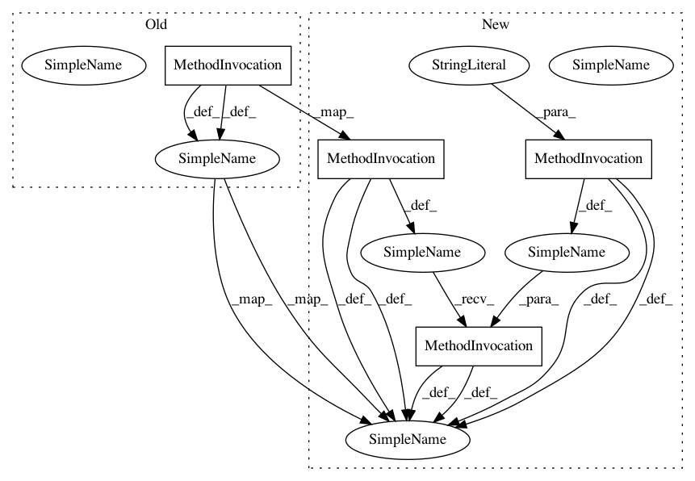

c09d7b252a74c0fb4ca6d21516867cb7942b7cf5,ml/kubeflow-pipelines/samples/kubeflow-tf/workflow1.py,,workflow1,#,22
Before Change
"--stage", "eval",
"--preprocessing_module", preprocessing_module2]
)
tfttrain2 = dsl.ContainerOp(
name = "tft-train2",
image = "gcr.io/google-samples/ml-pipeline-dataflow-tftbq-taxi",
arguments = [ "--input_handle", input_handle_train, "--outfile_prefix", outfile_prefix_train,
"--working_dir", "%s/%s/tft-train2" % (working_dir, "{{workflow.name}}"),
"--project", project,
"--mode", preprocess_mode,
"--setup_file", tft_setup_file,
"--max_rows", max_rows,
"--ts1", ts1,
"--ts2", ts2,
"--stage", "train",
"--preprocessing_module", preprocessing_module2]
)
train = dsl.ContainerOp(
name = "train",
image = "gcr.io/google-samples/ml-pipeline-kubeflow-tf-taxi",
After Change
"--stage", "eval",
"--preprocessing_module", preprocessing_module2]
).apply(gcp.use_gcp_secret("user-gcp-sa"))
tfttrain2 = dsl.ContainerOp(
name = "tft-train2",
image = "gcr.io/google-samples/ml-pipeline-dataflow-tftbq-taxi",
arguments = [ "--input_handle", input_handle_train, "--outfile_prefix", outfile_prefix_train,
"--working_dir", "%s/%s/tft-train2" % (working_dir, "{{workflow.name}}"),
"--project", project,
"--mode", preprocess_mode,
"--setup_file", tft_setup_file,
"--max_rows", max_rows,
"--ts1", ts1,
"--ts2", ts2,
"--stage", "train",
"--preprocessing_module", preprocessing_module2]
).apply(gcp.use_gcp_secret("user-gcp-sa"))
train = dsl.ContainerOp(
name = "train",
image = "gcr.io/google-samples/ml-pipeline-kubeflow-tf-taxi",
In pattern: SUPERPATTERN
Frequency: 1
Non-data size: 4
Instances
Project Name: amygdala/code-snippets
Commit Name: c09d7b252a74c0fb4ca6d21516867cb7942b7cf5
Time: 2019-01-18
Author: amy@infosleuth.net
File Name: ml/kubeflow-pipelines/samples/kubeflow-tf/workflow1.py
Class Name:
Method Name: workflow1